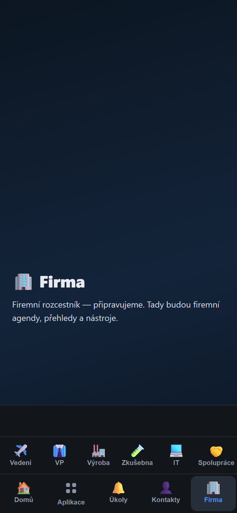
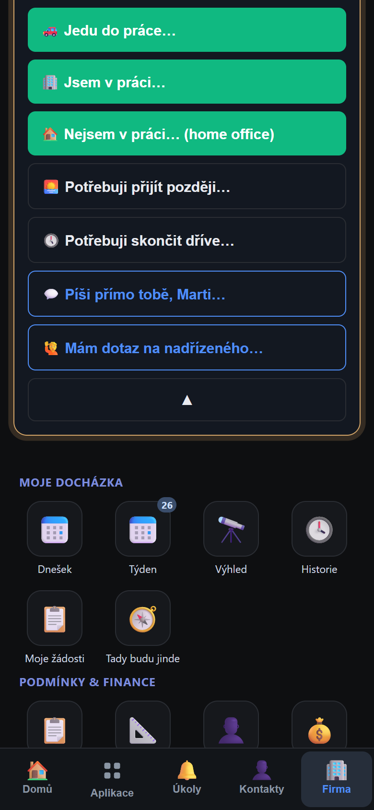
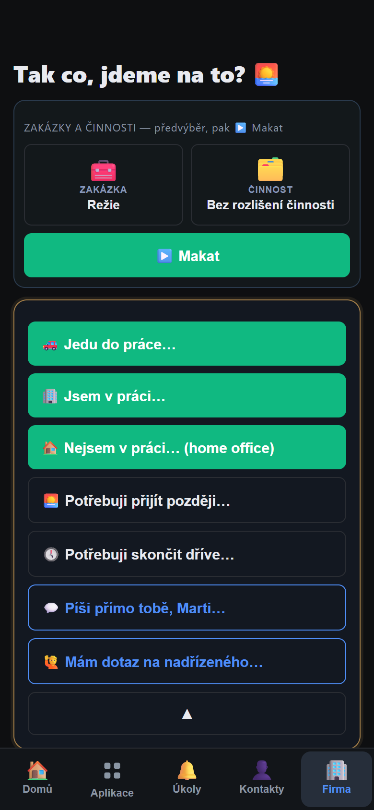
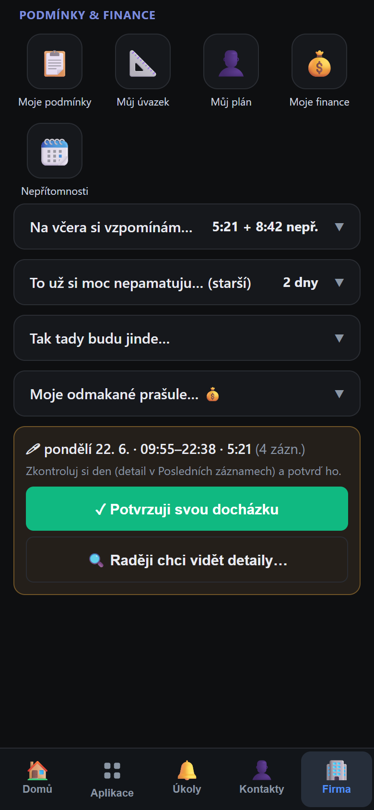
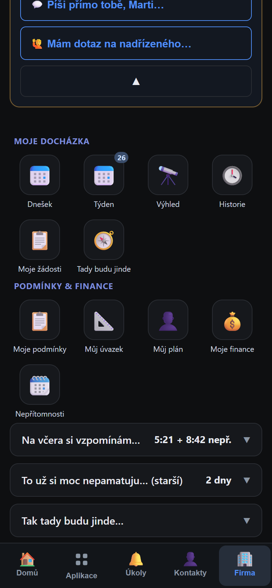
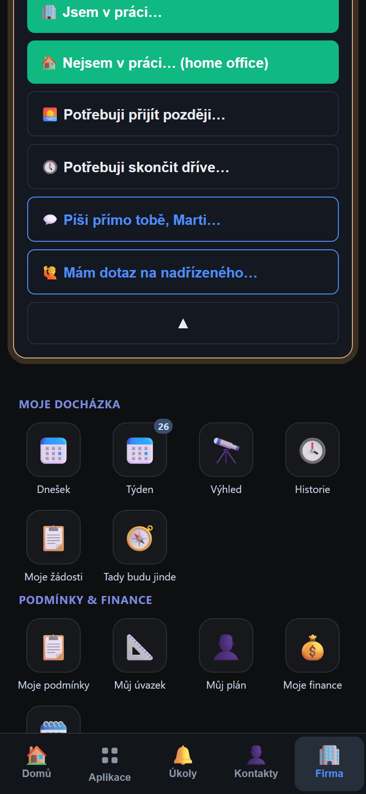
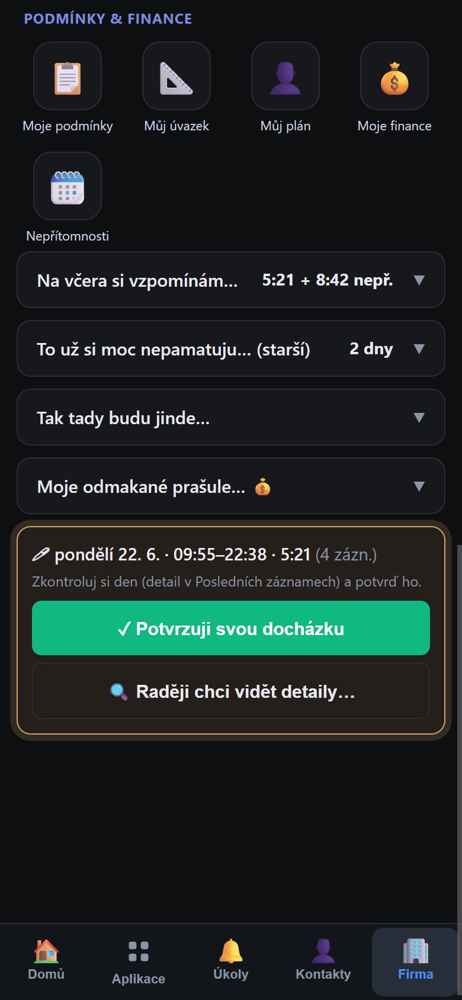

Obrázkový návod krok za krokem
Co se naučíte:
✅ Jak se dostat k docházce
✅ Příchod do práce
✅ Pauza na oběd a návrat
✅ Odchod z práce
✅ Potvrzení docházky
✅ Dovolená, lékař, OČR
✅ Tahák na jednu stránku
Pro všechny zaměstnance · Červen 2026
Otevřete appku STRATEGIE na mobilu.
Domovská obrazovka

Po ťuknutí na Firma
Ráno, když přijdete, se „píchnete" — řeknete systému, že jste tu.

Menu po ťuknutí na zelené tlačítko

Volby příchodu
Nemusíte nic dalšího dělat. Prostě pracujte — hodiny tikají samy.

Obrazovka docházky (Spolupráce)
Jdete na oběd? Odhlaste se — hodiny se zastaví.

Volby v menu (scrollujte dolů)
Končíte a jdete domů.

Volby v dolní části menu
Systém vás požádá, abyste si den potvrdili — že údaje sedí.
Na obrazovce uvidíte žlutou (jantarovou) kartu:
🖊 Včera · 7:26–16:26 · 7:52
Zkontroluj a potvrď svůj den.
Máte 14 dní na potvrzení každého dne.

Karta potvrzení (pokud existuje)
Všechno nahlásíte přes stejné tlačítko „Potřebuji ti něco říct…"
| Co ťuknete v menu | Kdy to použít | |
|---|---|---|
| 🌴 | Že by dovolená?… 😎 | Řádná dovolená (od – do) |
| 👨👧 | Zase řeším rodinu… (OČR) | Ošetřovné na dítě/blízkého |
| 🤒 | Je mi fakt blbě… Sick day. | Zdravotní volno (1 den) |
| 🤧 | Mám neschopenku do… | Potvrzená nemoc (datum konce) |
| 🩺 | Jedu k lékaři… | Návštěva lékaře |
| 🏡 | Potřebuju makat z domova… | Home office na konkrétní dny |
Vystřihněte a nalepte si na monitor nebo vložte do peněženky.
| Chci… | Ťuknu… |
|---|---|
| Přijít do práce | 💬 → 🏢 Jsem v práci |
| Přijít na zakázku | 💬 → 🧾 Jsem na zakázce → vybrat |
| Pracovat z domova | 💬 → 🏠 Nejsem v práci (home office) |
| Jít na oběd / pauzu | 💬 → 🙈 → 🍃 Jdu se najíst |
| Vrátit se z pauzy | ✅ Jsem zpět — pokračuju |
| Říct, že mám jednání | 💬 → 🙈 → 📅 Mám jednání |
| Jít domů (konec dne) | 💬 → 🙈 → 🫡 Dnes už nepočítej |
| Vzít si dovolenou | 💬 → 🌴 Že by dovolená?… |
| Nahlásit OČR | 💬 → 👨👧 Zase řeším rodinu… |
| Nahlásit nemoc | 💬 → 🤒 Je mi fakt blbě… |
| K lékaři | 💬 → 🩺 Jedu k lékaři |
| Potvrdit včerejšek | Žlutá karta → ✓ Potvrzuji |
| Říct, že jedu | 💬 → 🚗 Jedu do práce |
💬 = zelené tlačítko „Potřebuji ti něco říct…" · 🙈 = „Teď to bude jinak…"
Píchněte se, jakmile si vzpomenete. Čas se zapíše od momentu ťuknutí.
O půlnoci se odhlásíte automaticky. Další den dostanete upozornění. Bude tam ale víc hodin, než jste reálně pracovali — raději se odhlašte sami.
Máte pravděpodobně nepotvrzený den. Najděte žlutou kartu (scrollujte dolů). Ťukněte ✓ Potvrzuji nebo ✋ Rozpor.
V sekci „Co se dělo" ťukněte na špatný záznam. Zobrazí se:
⏱ Zkrátit konec · 🧾 Změnit zakázku · ✋ Rozpor
Pauza = hodiny STOJÍ (odhlášení).
Jednání = hodiny BĚŽÍ (jen informace kde jste).
V menu je 🙋 Mám dotaz na nadřízeného… Zprávu dostane přímo do mobilu.